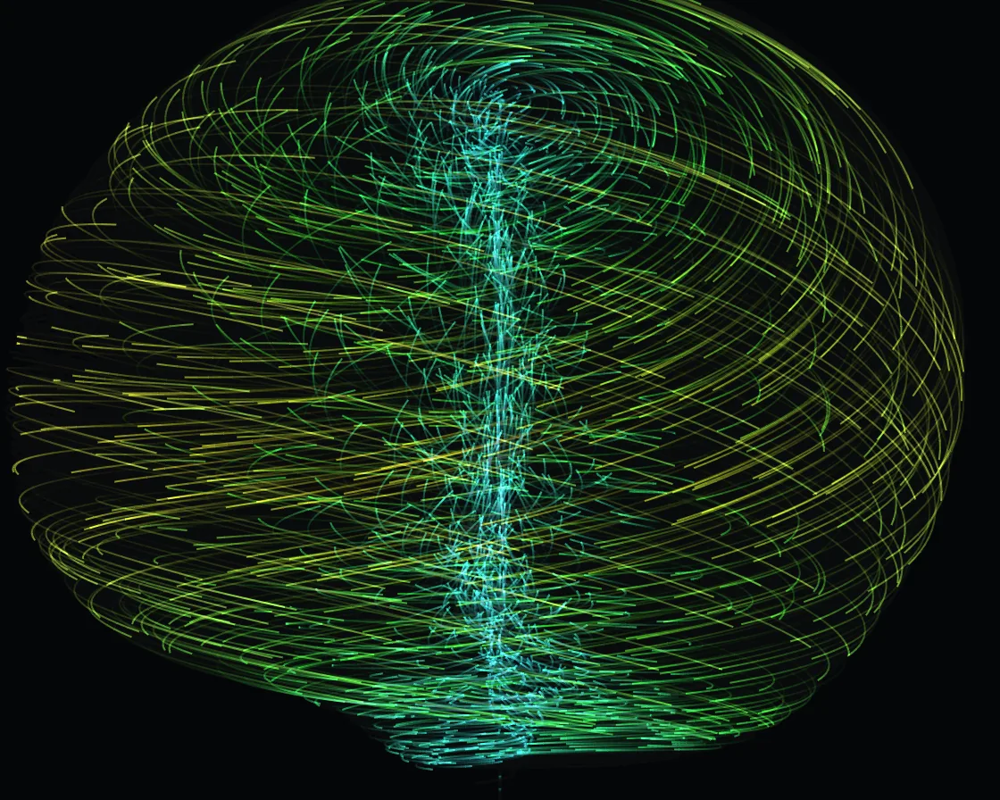

Strange attractor
Strange attractor is a Canvas effect: particles integrating the Aizawa attractor, with fading-canvas trails. One plain JavaScript file with no dependencies; add it with npx motion-library add strange-attractor.

Open it live, tune it and copy the code
What is Strange attractor?
Thousands of glowing particles trace the Aizawa attractor, an apple-like shell with a spine, as the camera turns.
How does Strange attractor work?
Particles are integrated through the three Aizawa equations each frame and projected in 3D; fading the canvas slightly instead of clearing leaves the trails.
How do I add Strange attractor to my website?
- In your project folder, run
npx motion-library add strange-attractor. It writesanimations/strange-attractor.js. Needs Node 18 or newer. - Import it and call it with a container element that has a size:
import fx from './animations/strange-attractor.js'; const stop = fx(document.querySelector('#hero')); - Call
stop()to clean up, for example when a component unmounts.
Every setting below is also a flag, so you can install it already tuned: npx motion-library add strange-attractor --particles 6000.
What settings can I tweak?
| Setting | Flag | Default | Range | Step |
|---|---|---|---|---|
| Particles | --particles | 2500 | 500 to 6000 | 100 |
| Speed | --speed | 1 | 0.2 to 3 | 0.1 |
Specifications
- Renderer
- Canvas 2D
- Category
- Flow & particles
- Dependencies
- None
- File size
- 3.3 KB, unminified
- Interactive
- No: it plays on its own
- Reduced motion
- Plays the same for everyone
- Licence
- MIT-0: use it anywhere, no credit needed
Source code
// Strange attractor: thousands of particles follow the Aizawa equations, which never repeat and never escape.
// Integrated in 3D, projected through a slowly turning camera, with trails from fading instead of clearing.
const PARAMS = { particles: 2500, speed: 1 };
export default function (stage) {
const canvas = document.createElement('canvas');
canvas.style.cssText = 'position:absolute;inset:0;width:100%;height:100%;display:block';
stage.append(canvas);
const ctx = canvas.getContext('2d');
let W = 0, H = 0;
const resize = () => { const d = Math.min(devicePixelRatio, 2); W = stage.clientWidth; H = stage.clientHeight; canvas.width = W * d; canvas.height = H * d; ctx.setTransform(d, 0, 0, d, 0, 0); ctx.fillStyle = '#050608'; ctx.fillRect(0, 0, W, H); };
const ro = new ResizeObserver(resize); ro.observe(stage); resize();
// Aizawa system
const a = 0.95, b = 0.7, c = 0.6, d = 3.5, e = 0.25, f = 0.1;
const deriv = (x, y, z) => [(z - b) * x - d * y, d * x + (z - b) * y, c + a * z - z * z * z / 3 - (x * x + y * y) * (1 + e * z) + f * z * x * x * x];
const n = Math.round(PARAMS.particles), P = new Float32Array(n * 3);
// start anywhere in the volume, then run each particle forward until it has settled onto the attractor
const settle = (i, steps) => { for (let k = 0; k < steps; k++) { const [dx, dy, dz] = deriv(P[i * 3], P[i * 3 + 1], P[i * 3 + 2]); P[i * 3] += dx * 0.01; P[i * 3 + 1] += dy * 0.01; P[i * 3 + 2] += dz * 0.01; } };
const seed = i => { P[i * 3] = (Math.random() - 0.5) * 2; P[i * 3 + 1] = (Math.random() - 0.5) * 2; P[i * 3 + 2] = Math.random() * 2 - 0.5; settle(i, 300 + Math.random() * 600); };
for (let i = 0; i < n; i++) seed(i);
const prev = new Float32Array(n * 2).fill(NaN);
let raf;
function frame(now) {
const t = now / 1000, yaw = t * 0.25, pitch = 1.15 + Math.sin(t * 0.2) * 0.25;
const cy = Math.cos(yaw), sy = Math.sin(yaw), cp = Math.cos(pitch), sp = Math.sin(pitch);
ctx.globalCompositeOperation = 'source-over';
ctx.fillStyle = 'rgba(5, 6, 8, 0.12)'; ctx.fillRect(0, 0, W, H);
ctx.globalCompositeOperation = 'lighter';
const scale = Math.min(W, H) * 0.34, dt = 0.011 * PARAMS.speed;
ctx.lineWidth = 1;
for (let i = 0; i < n; i++) {
let x = P[i * 3], y = P[i * 3 + 1], z = P[i * 3 + 2];
const [dx, dy, dz] = deriv(x, y, z);
x += dx * dt; y += dy * dt; z += dz * dt;
if (!isFinite(x) || Math.abs(x) > 5) { seed(i); prev[i * 2] = NaN; continue; }
P[i * 3] = x; P[i * 3 + 1] = y; P[i * 3 + 2] = z;
// rotate: yaw around z (the attractor's axis), then tilt toward the camera
const rx = x * cy - y * sy, ry = x * sy + y * cy, rz = z - 0.6;
const py = ry * cp - rz * sp, pz = ry * sp + rz * cp + 3.2;
const X = W / 2 + (rx / pz) * scale * 3.2, Y = H / 2 + (py / pz) * scale * 3.2;
const speed = Math.hypot(dx, dy, dz);
const hue = 190 - Math.min(150, speed * 22); // slow: cyan, fast: warm amber
if (prev[i * 2] === prev[i * 2]) {
ctx.strokeStyle = `hsla(${hue}, 90%, ${55 + 12 * (1 - pz / 4)}%, 0.55)`;
ctx.beginPath(); ctx.moveTo(prev[i * 2], prev[i * 2 + 1]); ctx.lineTo(X, Y); ctx.stroke();
}
prev[i * 2] = X; prev[i * 2 + 1] = Y;
}
raf = requestAnimationFrame(frame);
}
raf = requestAnimationFrame(frame);
return () => { cancelAnimationFrame(raf); ro.disconnect(); canvas.remove(); };
}